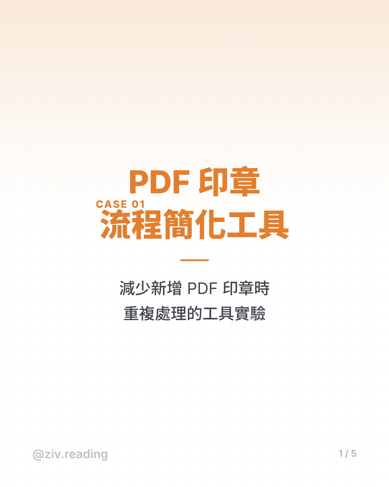
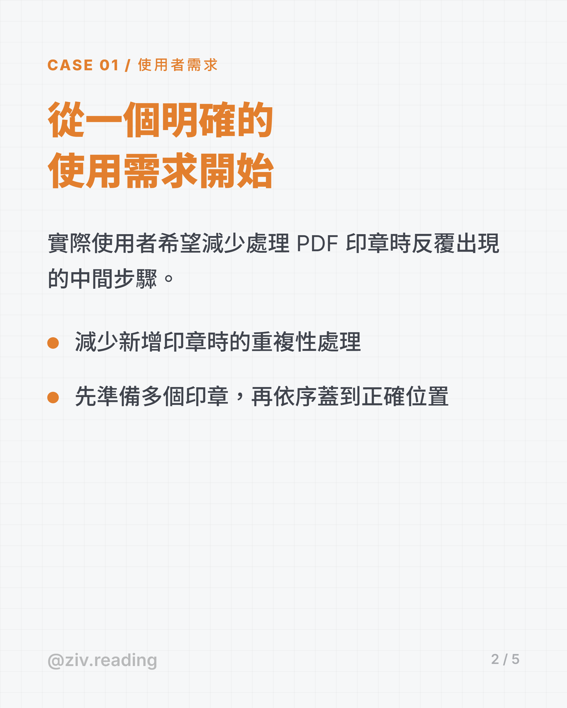
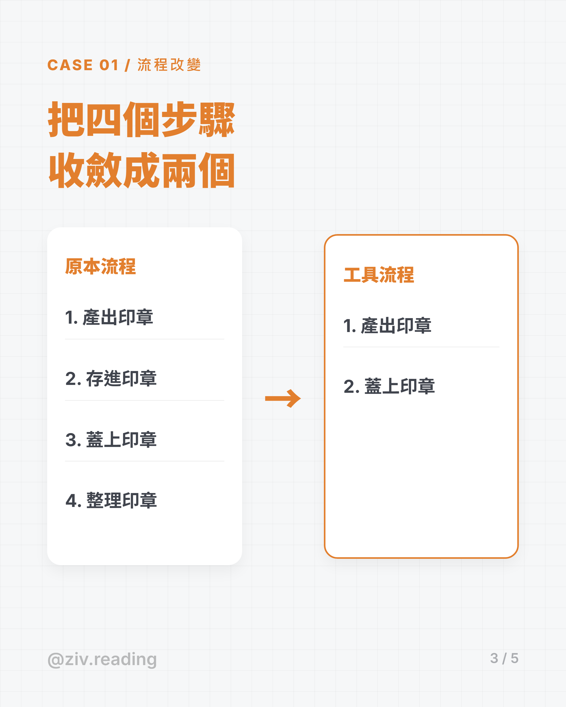
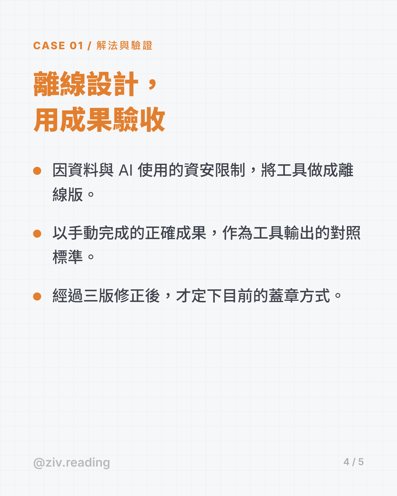
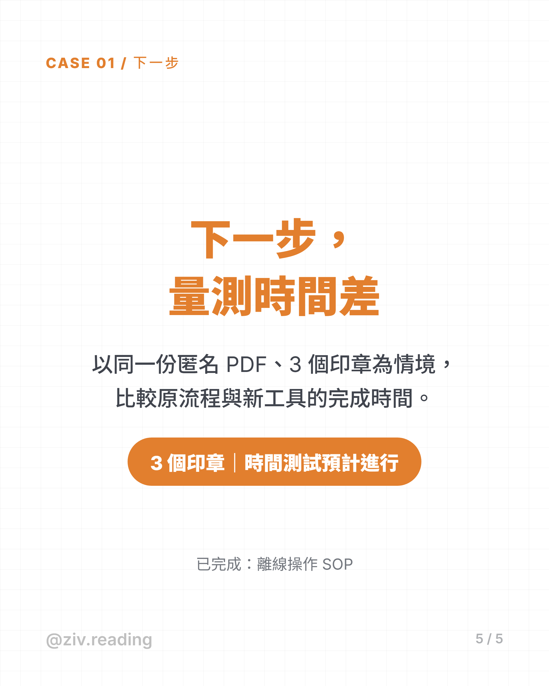

一、使用者的需求
- 實際使用者希望減少處理 PDF 印章時反覆出現的中間步驟。
- 減少新增印章時的重複性處理。
- 先準備多個印章，再依序蓋到正確位置。
二、流程改變
原本流程
- 產出印章
- 存進印章
- 蓋上印章
- 整理印章
工具流程
- 產出印章
- 蓋上印章
中間兩個步驟被拿掉，不是因為它們不重要，而是因為它們只是為了讓前後兩步能接起來而存在。
三、離線設計與驗收
- 因資料與 AI 使用的資安限制，將工具做成離線版。
- 以手動完成的正確成果，作為工具輸出的對照標準。
- 經過三版修正後，才定下目前的蓋章方式。
第二點是這個案子的驗收基準：不是「看起來對」，是「跟已知正確的那一份對得起來」。
四、成果與下一步
- 已完成：離線操作 SOP。
- 預計以同一份匿名 PDF、3 個印章為情境，比較原流程與新工具的完成時間。
此為待驗證的時間假設，不可當成既有的節省時間成果宣稱。
時間效益尚未實際量測，所以這一頁不寫任何「省下多少分鐘」。
五、案例卡




